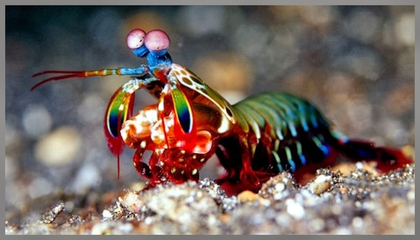
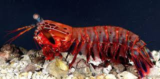

Stomatopoda
Fatos sobre o Stomatopoda
Stomatopoda (ou estomatópode), chamados popularmente de tamarutacas ou de lacraias-do-mar no Brasil, é uma ordem de crustáceos marinhos da subclasse Hoplocarida, que agrupa cerca de 400 espécies. Os estomatópodes são predadores ativos que caçam presas com o auxílio de um sentido de visão muito apurado e capaz de interpretar polarização no espectro ultravioleta e infravermelho).
O Stomatopoda |
|
| Reino: | Animalia |
| Filo: | Arthopoda |
| Subfilo: | Crustacea |
| Classe: | Malacostraca |
| Subclasse: | Hoplocarida |
| Ordem: | Stomatopoda, Latreille, 1817 |
Características gerais
Eles vivem em fundo consolidado, lodoso ou ainda arenoso, onde cavam seus buracos ou aproveitam-se dos orifícios deixados por outros animais para neles se instalar. São animais exclusivamente carnívoros, alimentando-se de camarões, caranguejos, moluscos, peixes e até mesmo outros da mesma ordem. O segundo par de patas, muito desenvolvido, é usado tanto para atacar a presa como para se defender.
O urópodo, quando aberto, também funciona para defesa, como um escudo, fechando a galeria em que o animal esteja instalado. A fêmea desova no local onde se abriga e, em caso de perigo, enrola os ovos como uma bola, prendendo-os junto ao corpo até encontrar um abrigo mais protegido.
Curiosidades

- Possuem uma vasta gama de cores pelo corpo.
- Parecem inofensivos mas possuem um dos socos mais forte do reino animal, podendo chegar a 80km/h.
- Possuem o mais complexo sistema de visão do reino animal, enxergando 12 cores primárias (enquanto os humanos enxergam apenas 3)
- Os maiores e mais fortes exemplares conseguem desferir um soco na velocidade que se equipara ao tiro de um calibre .22 (equivalente a 720km/h) e uma força de impacto de 60 kg/cm².